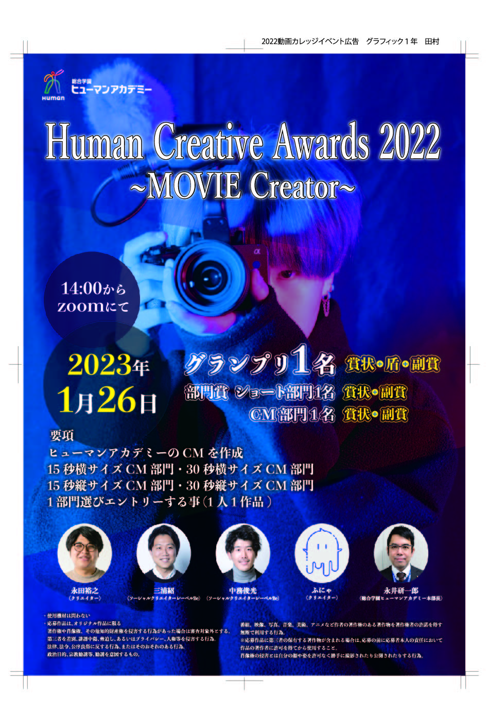

ヒュマンアカデミー １年 田村とわ
2014年8月10日

始めてのパンフレット作成
もぎたての新鮮なトマトは、ヘタが緑色でみずみずしく、シャキッとし
ています。赤い実は皮がピンと張り、とるっとと丸いものがいいのだと
か。糖度の高いトマトは水に沈むそうですが、何でも甘ければいいと
いうものではないので、好みの味のトマトを作る農家さんを見つけた
いところです
もぎたてトマトの美味しい食べ方
何と言っても、もぎたてトマトは水洗いしてそのままたべれるのが一番で
す。暑い日に美味しいトマトにかぶりつくと、それだけで幸せになれま
す。水分補給も出来るので一石二鳥です。
もちろん、何かをつけたり、かけたりして食べるのも美味しいです。定
番としては、塩、砂糖、マヨネーズ、オリーブオイルなどがおすすめ